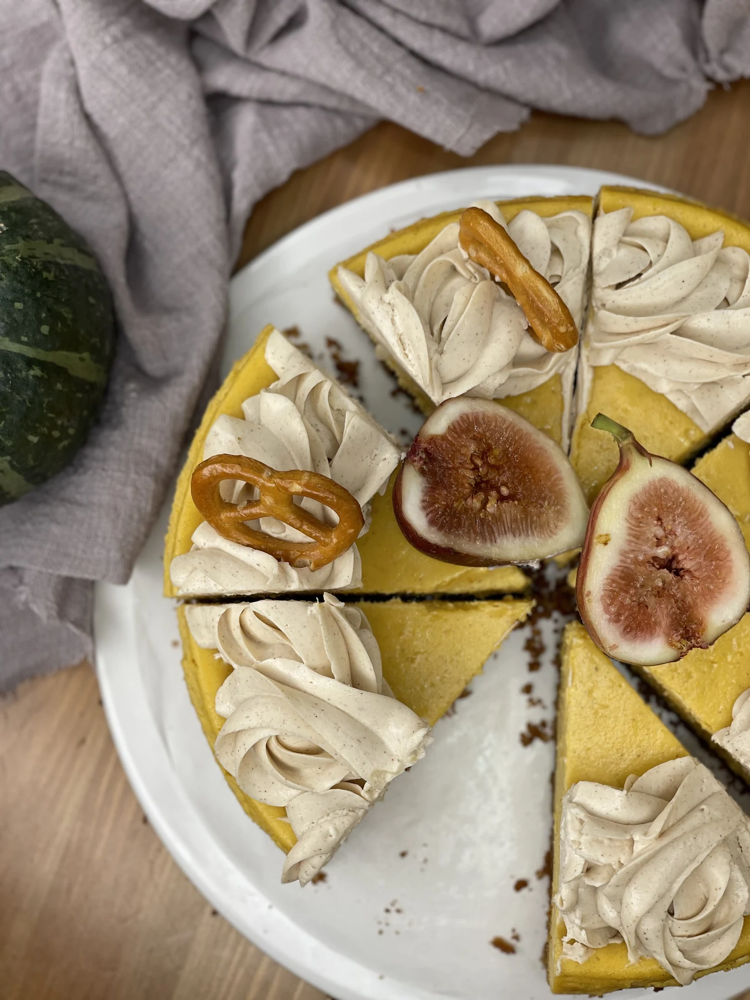

I make the sweet side of a venue worth ordering—and worth celebrating.
For a café finding its dessert identity. A restaurant building its next menu. A gathering that deserves a little more care. I bring the recipes, the craft and the training to make it yours.
01 / FOR YOUR VENUE
Three ways to
create something lovely.
Clear deliverables. A personal approach.
Your venue’s concept comes first.
01
For cafés & restaurants
A dessert menu.
With your signature.
A focused programme to make dessert belong to your venue—and to the team who serves it.
Layered cakes, seasonal cheesecakes, cookies, small desserts and French boulangerie. An evolving practice, shaped by texture, occasion and the joy of making.
Chocolate Medovik. Vegan layered cakes. Cake pops, mochi and chocolates. Croissants, baguettes and danishes. Explore the creations for more of my practice.
03 / GATHER AROUND
Good things
happen around a table.
Celebrate. Learn. Make a memory.

The celebration
A sweet table and considered table styling turn your venue into the setting for an occasion. Enquire at least 10 days ahead.
The detail is part of the pleasure: a careful finish, a new texture, the moment a recipe becomes something you can share.
A quiet moment of craft, in motion.
Lina / Lina.Pastry
05 / THE CHEF
Hello, I’m Lina.
A pastry chef. A baker.
Always a curious maker.
I’m Lina, the chef behind Lina.Pastry. My story began in my grandmother’s kitchen, kneading dough and decorating cakes. Today my work brings together pâtisserie, boulangerie and recipe development.
Based in Shanghai, I bring Le Cordon Bleu Dusit training and experience in Dubai, Moscow and Tashkent. I am available for projects across China: developing desserts, training teams and creating memorable occasions.
Cafés and restaurants that want to introduce or strengthen their dessert menu. It also suits venues that host celebrations and want a more considered sweet offering.
What is included in the two-day programme?+
A menu audit, one or more new desserts, recipe and preparation sheets, and kitchen training across two visits. We agree the menu direction and scope together before the programme begins.
How far ahead should I enquire about an event?+
Please enquire at least 10 days before a celebration. Share the venue, date, guest count and the type of occasion so we can discuss the details and confirm availability.
How many people can join a masterclass?+
Venue masterclasses start from 12 guests. The theme, format and practical arrangements are discussed around your group and your space.
Do you work outside Shanghai?+
Yes. Lina.Pastry is based in Shanghai and available for projects across China. Tell me your city when you enquire.
Can recipes be adapted?+
Recipe adaptation is part of my practice, including experience with vegan desserts. Please share dietary requirements and allergies at the start so we can discuss what is feasible for your kitchen.
06 / LET’S TALK
Tell me
about your place.
Share your city, the kind of project and your preferred timing. Let’s find the right place to start.